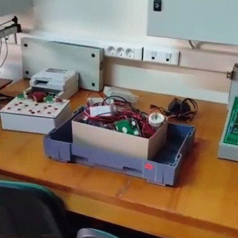
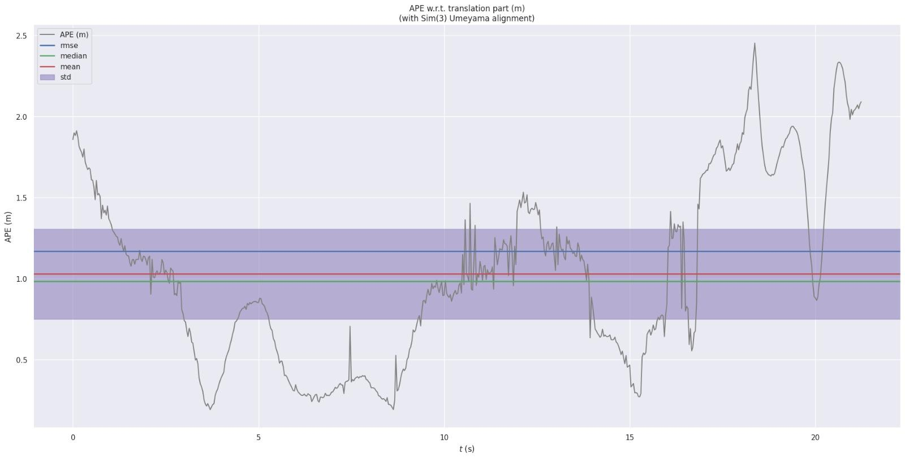
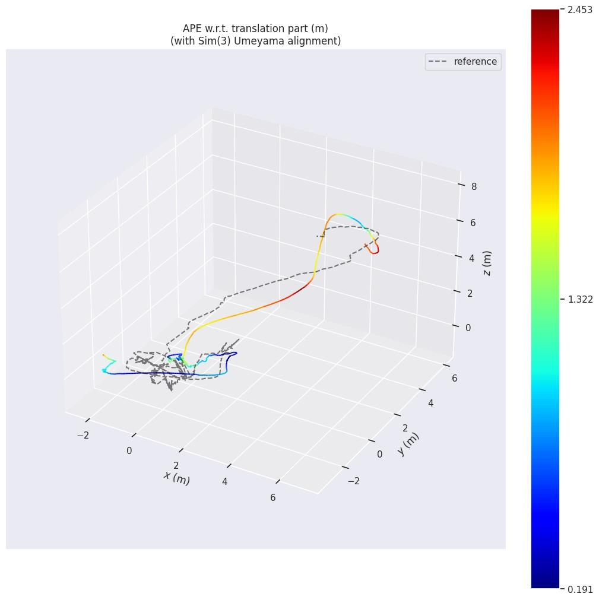
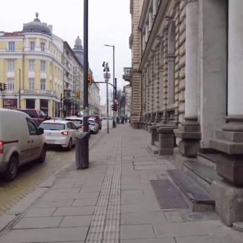
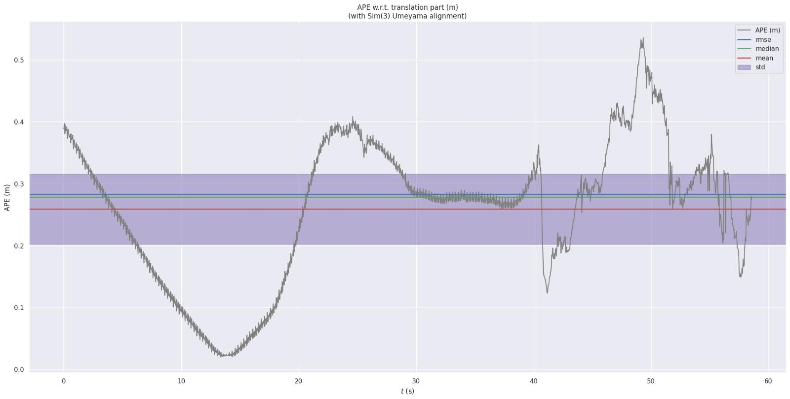
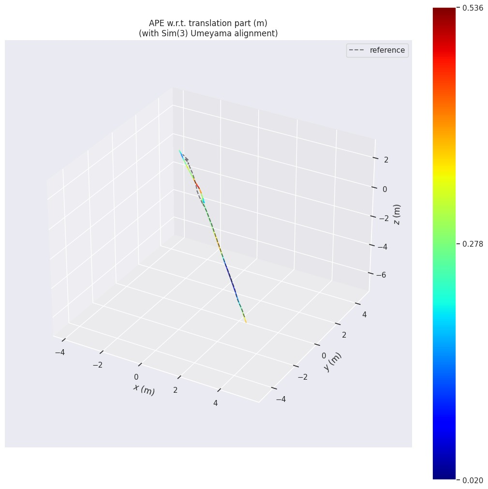
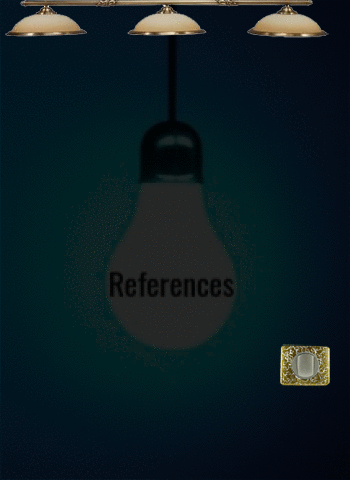

Monocular SLAM Comparison
Evaluating COLMAP and ORB-SLAM2
Group 33 - UCL MSc Robotics & AI

- Introduction
- Methods and Procedures
- Pipeline
- Videos
- Results
- Analyses
- Conclusions
Introduction
We present a complete monocular SLAM pipeline using COLMAP and ORB-SLAM2. The pipeline was evaluated on newly acquired indoor and outdoor video sequences using trajectory alignment metrics.


Methods and Procedures
- Frame extraction from indoor and outdoor videos (30 fps)
- COLMAP used for intrinsic calibration and sparse 3D reconstruction
- ORB-SLAM2 configured with COLMAP calibration parameters
- Trajectory extraction and evaluation using EVO (APE metric)
Pipeline
- Record video (indoor/outdoor)
- Extract video frames using ffmpeg at 30fps
- Use COLMAP for camera calibration and sparse reconstruction
- Extract intrinsics from COLMAP for use in ORB-SLAM2
- Configure and run ORB-SLAM2 monocular pipeline
- Extract trajectories from ORB-SLAM2
- Compare reconstructed trajectories using EVO APE

Indoor

Indoor Videos
Original indoor recording
ORB-SLAM2 visualization
Indoor Results
- RMSE: 1.1682 m
- Mean Error: 1.0280 m
- Median Error: 0.9831 m
- Standard Deviation: 0.5547 m
- Min: 0.1912 m
- Max: 2.4528 m


Indoor Analyse
- Root Mean Square Error reflects the overall deviation of the estimated trajectory from the ground truth. The higher value indicates relatively poor alignment in the indoor setting.
- On average, each frame's estimated camera position deviated by about 1 meter from the true position.
- Half of the trajectory points had an error below ~0.98 m, showing that although there were large errors, they weren't consistent throughout.
- Indicates high variability in errors, meaning that ORB-SLAM2 performed inconsistently in this environment.
- The best-case alignment for some frames was relatively good.
- However, the worst-case deviation reached over 2.4 meters, showing significant drift likely due to poor visual features.
- Indoor scenes had limited structure and repetitive features
- Feature matching was more difficult leading to alignment drift

Outdoor

Outdoor Videos
Original outdoor recording
ORB-SLAM2 visualization
Outdoor Results
- RMSE: 0.2826 m
- Mean Error: 0.2588 m
- Median Error: 0.2782 m
- Standard Deviation: 0.1135 m
- Min: 0.0200 m
- Max: 0.5360 m



Outdoor Analyse
- The Root Mean Square Error is significantly lower than indoor, showing strong alignment between estimated and ground-truth trajectories.
- On average, the position estimate was within ~26 cm of the true location, indicating stable SLAM performance.
- Half the frames had errors below ~28 cm, suggesting most estimates were tightly grouped around the ground truth.
- Low variability in error indicates consistent tracking quality throughout the sequence.
- In the best case, the system nearly matched the ground truth, with only 2 cm deviation.
- Even the worst error remained under 0.54 m, suggesting no severe drift occurred.
- Rich texture and wide-open space improved feature matching.
- Smooth motion led to better trajectory estimation and alignment.
Conclusions
- Outdoor SLAM performance significantly outperforms indoor
- Careful video capture and rich environments are critical
- COLMAP intrinsics improve ORB-SLAM2 monocular results


Each member recorded their own video (Klevis: indoor, David: outdoor) and executed the described pipeline from frame extraction, COLMAP calibration, ORB-SLAM2 configuration and execution, to final trajectory evaluation using EVO.
- R. Mur-Artal and J. D. Tardo ́s, ORB-SLAM2: An Open-Source SLAM System for Monocular, Stereo and RGB-D Cameras, IEEE Transactions on Robotics, vol. 33, no. 5, pp. 1255–1262, 2017.
- University College London (UCL), COMP0249 24-25 ORB SLAM2 GitHub Reposi- tory, Available at: https://github.com/UCL/COMP0249_24-25_ORB_SLAM2
- M. Grupp, evo: Python package for the evaluation of odometry and SLAM, Available at: https://github.com/MichaelGrupp/evo, 2017.
- J. L. Scho ̈nberger and J.-M. Frahm, Structure-from-Motion Revisited, In Proceedings of the IEEE Conference on Computer Vision and Pattern Recognition (CVPR), 2016.
